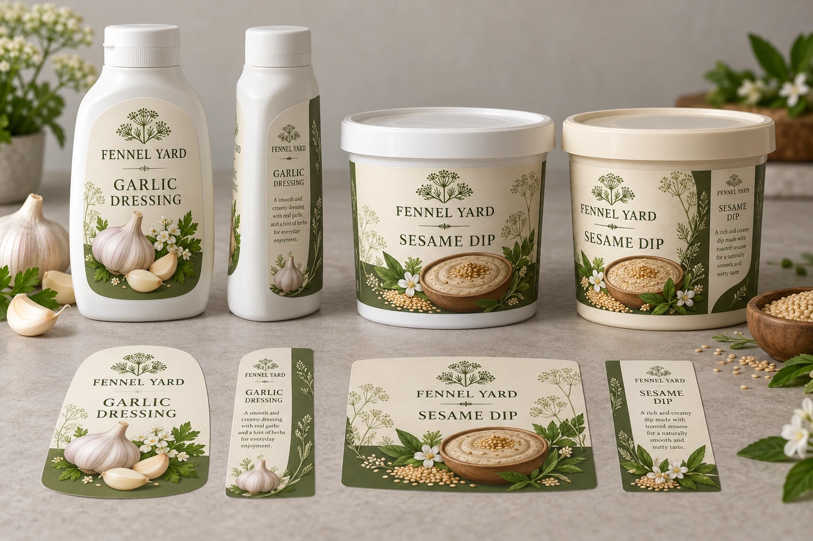

A label trial succeeds on a white sample bottle, then the approved material is ordered for a different supplier, color or molded version. The resin description still says HDPE or PP, but the exact container covered by the earlier trial has become unclear.
Keep an approved-container variant register alongside the label construction. A resin category is a starting description, not a complete boundary for an application approval.

AI-generated packaging planning example. Fennel Yard is a fictional brand; not a customer project, production test or usable retail artwork.
Identify the sample that actually entered the trial
Record the container supplier, item reference and relevant lot or molding identification available from the supplier. Keep the actual sample linked to the trial observations. A photograph can show a shape, but it cannot confirm resin formulation, surface treatment or an internal production reference.
Ask which variants the packaging team intends to cover. Differences in color, surface finish, wall flexibility or supplied formulation should be identified for review, not automatically declared causes of failure. The purpose of the register is to make the proposed scope explicit.
| Container coverage record | What to identify |
|---|---|
| Tested item | Supplier, container item, sample/lot reference |
| Proposed variant | Exact alternative and known differences |
| Represented condition | Empty/filled state and actual application/use route |
| Label construction | Face, adhesive, finish and physical label reference |
| Evidence relationship | Same, different or unknown; supporting record |
| Reviewer decision | Scope accepted, additional comparison or unresolved input |
Do not enter a material specification from appearance. If a supplier cannot identify a formulation or treatment, state that limitation and ask the responsible team how it affects the proposed coverage.
Preserve differences when selecting representative samples
A team may propose a representative container for several variants. Ask what makes it representative for the intended evaluation and which differences remain outside that argument. The article does not prescribe a universal number of mold cavities, lots or colors to test.
If wall movement matters, show the intended filled and handled state. If the label panel differs between suppliers, compare the actual proposed positions rather than relying on nominal bottle volume. Keep physical fit and adhesion observations separate so a geometry mismatch is not reported only as weak glue.
Reopen the affected approval when the pack changes
When purchasing changes the container source, compare the new item against the register before using the earlier label release. Record whether the difference is administrative, physical, unresolved or already represented by suitable evidence. Let the responsible reviewer decide what additional evaluation is needed.
In a hypothetical dip range, an accepted rigid tub does not automatically cover a flexible squeeze bottle even if a purchasing system groups both under plastic packaging. Conversely, two flavor variants on the same identified tub may not need separate material assumptions simply because their artwork colors differ.
Keep an honest boundary on the release
Issue the accepted construction with the actual approved container scope and remaining conditions. If only a presentation mockup was reviewed, do not describe it as a completed line or handling trial. If a sample represents a substitute material, preserve that difference until the actual offered construction is evaluated.
Connect the register to squeeze-bottle behavior, adhesive range selection and supplier release ownership.
Short answer
Labels for HDPE and PP containers need an adhesive selected for low-surface-energy plastic, plus a face material that fits the container's stiffness. A rigid PP jar and a soft HDPE squeeze bottle should not be treated as the same job simply because both are plastic.
At the quote desk, buyers often send a bottle photo and ask for waterproof BOPP. BOPP may be sensible, but it does not answer the hardest question: can the adhesive wet out this exact molded surface? The prettiest film in the sample book still loses if its edges rise after filling.
Why HDPE and PP are harder to label
Pressure-sensitive adhesive forms a bond by flowing into microscopic surface irregularities. HDPE and PP generally offer less surface energy than glass, metal or many coated papers, so that wet-out can be more difficult. Add mold-release residue, textured walls or a bottle that flexes, and a standard adhesive may show acceptable initial tack but weak long-term hold.
| Container condition | What can happen | First production check |
|---|---|---|
| Rigid smooth PP jar | Good center bond but lifted corners | Adhesive compatibility and corner radius |
| Soft HDPE bottle | Creasing or edge movement during squeezing | Conformable film and stable label panel |
| Textured molded surface | Incomplete contact beneath the label | Move to a smoother panel or test a matched adhesive |
| Cold or damp container | Weak initial tack | Application temperature and surface dryness |
A typical inquiry: the sample sticks, the production bottle does not
Consider a composite planning example, not a claimed customer case. A sauce brand tests a film label on ten empty HDPE bottles from its office. Suppose the office samples appear acceptable but later production uses another molding batch and a different application condition, after which edge lift is reported. This hypothetical sequence does not establish its technical cause.
Compare the actual bottle batches, application conditions, surface observations and observation intervals. Naming a stronger adhesive cannot remove those differences from the investigation."
Choose face material and adhesive as one construction
| Direction | Where it can win | Where it can lose |
|---|---|---|
| White BOPP | Rigid or semi-rigid packs needing opacity and moisture resistance | Very soft bottles may need greater conformability |
| Clear BOPP | Smooth containers and a no-label appearance | Surface texture and bubbles remain visible |
| Conformable film | Flexible walls and repeated squeezing | May add cost where a rigid jar does not need it |
| Paper | Dry, rigid jars with a tactile brand direction | Moisture, flexing and difficult adhesion reduce tolerance |
Paper deserves a fair win on a dry, rigid PP jar when touch and print character matter. Film is not automatically more professional. It simply gives a wider operating window when water, flex or wiping enters the job.
How to run a useful adhesion test
- Use containers from the intended production supplier and molding batch where possible.
- Clean only with the same method used on the real line.
- Apply at the expected bottle and room temperature with firm, even pressure.
- Inspect initial contact and the later intervals agreed for the actual use and construction.
- Fill, squeeze, refrigerate or expose the package to product splash as required.
- Record whether failure occurs at the edge, face material or adhesive interface.
Send the resin type, bottle photos, filled-bottle dimensions and storage process with the quote. For flexible walls, also read Labels for Squeeze Bottles. For general diagnosis, see Why Bottle Labels Peel Off.
Send the relevant project details
Discuss label coverage for plastic-container variants with actual container references, known differences, label dimensions/construction and available sample evidence. The form opens an email draft; use listed email or WhatsApp for files. Resin identity, representative-sample scope and suitability need responsible supplier confirmation.